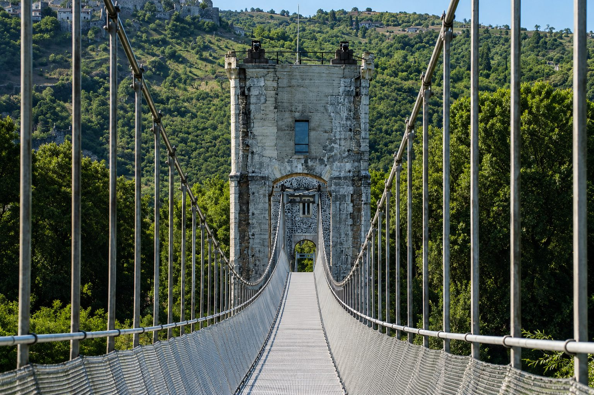
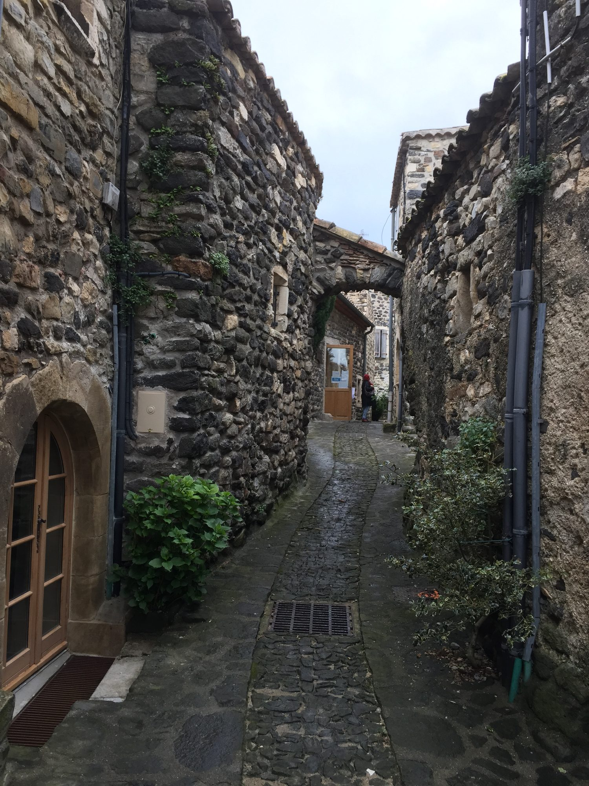

Op ongeveer 30 minuten van Les Cabritas vormen Rochemaure en Saint-Vincent-de-Barrès twee naburige tussenstops aan de voet van de oude vulkanen van de Coiron. Het eerste staat bekend om zijn middeleeuwse dorp en spectaculaire Himalayabrug over de Rhône, het tweede om de stille charme van een karaktervol dorp.

De Himalayabrug, een heruitgevonden hangbrug
De oude voetgangersbrug van Rochemaure werd in 1858 gebouwd volgens de hangbrugtechniek van Marc Seguin en was lang een oversteek tussen de Drôme en de Ardèche, tot ze in 1982 definitief werd gesloten. Ze werd in 1985 beschermd historisch monument, van de sloop gered en omgebouwd tot een Himalayabrug, ingehuldigd in 2013: de oorspronkelijke pijlers werden gerestaureerd en het brugdek vervangen door een hangende metalen constructie van zo'n 300 meter lang. Ze wordt nu gebruikt door voetgangers en fietsers op de ViaRhôna en trekt meer dan 100.000 bezoekers per jaar, aangetrokken door het uitzicht over de Rhône, de heuvels van de Coiron, de uitgedoofde vulkaan van Chenavari en het middeleeuwse kasteel boven het stadje.
Rochemaure, een middeleeuws dorp aan de voet van de vulkanen
Het dorp Rochemaure ligt rond de ruïnes van zijn kasteel, met stenen straatjes en een goed bewaarde sfeer. De plek biedt een mooie kans om bouwkundig erfgoed te combineren met het vulkanische landschap dat typisch is voor het plateau van de Coiron, dat de streek domineert.
Saint-Vincent-de-Barrès, een verborgen parel van de Coiron
Op een paar minuten afstand maakt Saint-Vincent-de-Barrès het uitje mooi af: een minder bekend maar karaktervol dorp, met rustige straatjes en architectuur die typisch is voor de Coiron, ideaal om de wandeling in een rustig tempo voort te zetten.

Praktische informatie vanuit Les Cabritas
- Afstand vanaf Flaviac: ongeveer 30 min rijden
- Beste periode: het hele jaar, lente en herfst om te wandelen
- Ideaal voor: erfgoed, sensatie (hangbrug), fotografie
Zin om Rochemaure en Saint-Vincent-de-Barrès te ontdekken vanuit uw vakantiehuis in de Ardèche?
Les Cabritas verwelkomt u in Flaviac, in het hart van de Ardèche, voor een comfortabel verblijf met privézwembad, vlak bij de mooiste plekken van de streek.
Beschikbaarheid bekijken